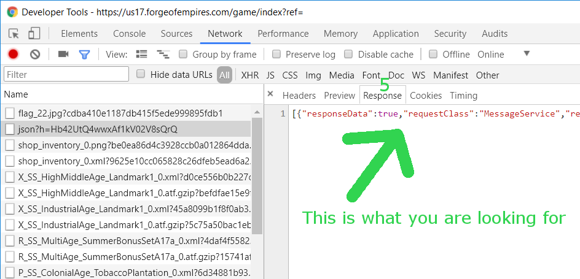

- There are many tabs: Elements, Console, Source, Network etc.
You have to click on Network tab.
- Record button. Red is on. Gray is off.
It has to be on (Red).
- Clear button. It clears the request logs.
Click on it before visiting a player.
- Look for a request with type json. Click on it.
- Request details are shown on the right hand side. Again there are many tabs.
Click on Response tab.
- Verify you are looking at correct response.
Search "OtherPlayerService". If it is there you can search for other thing.
If not start again from step 3.
